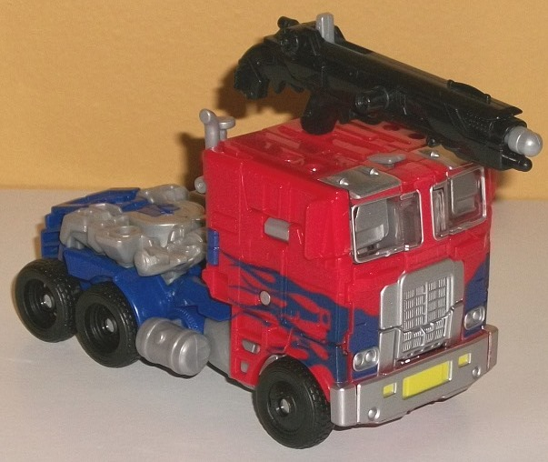
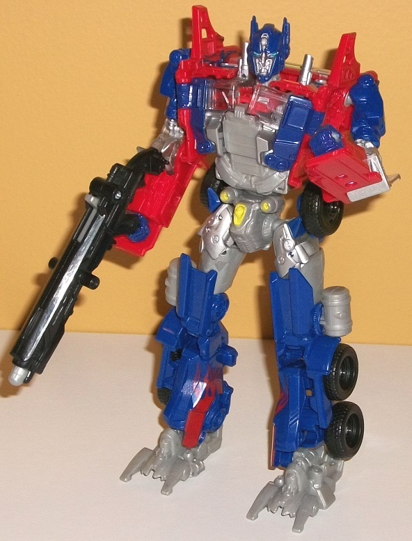
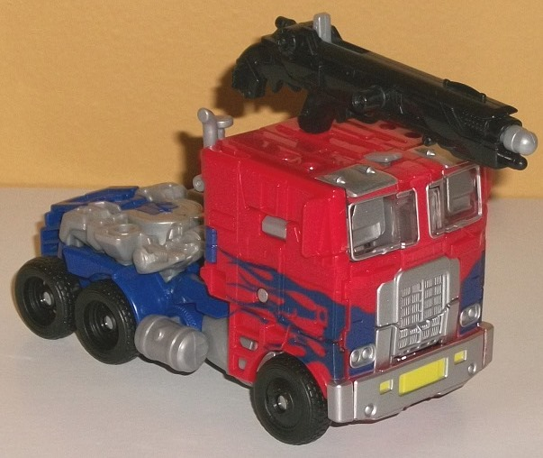
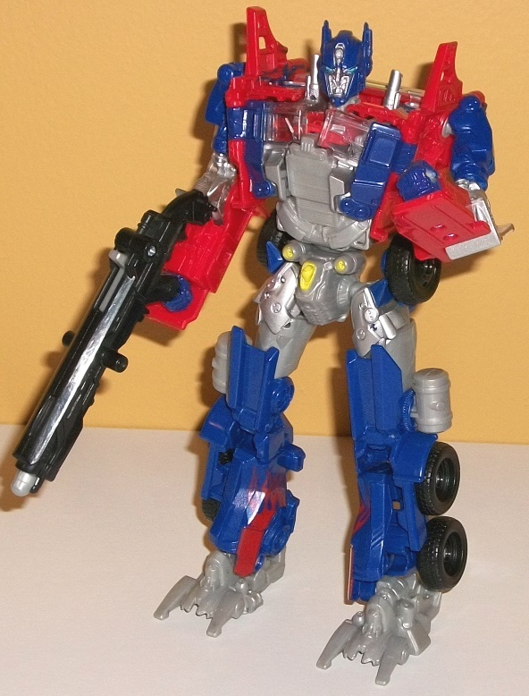
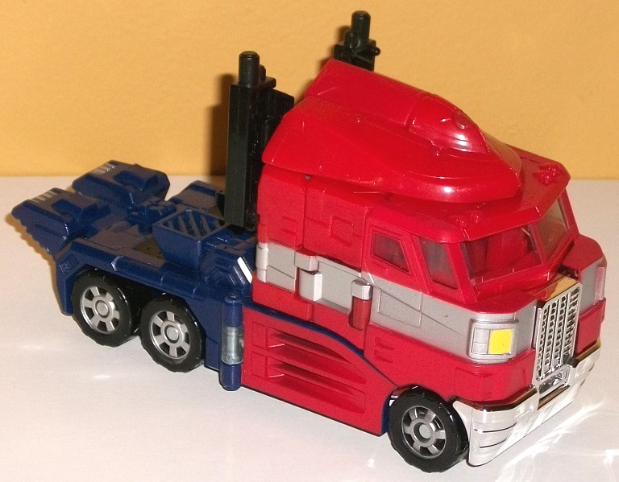
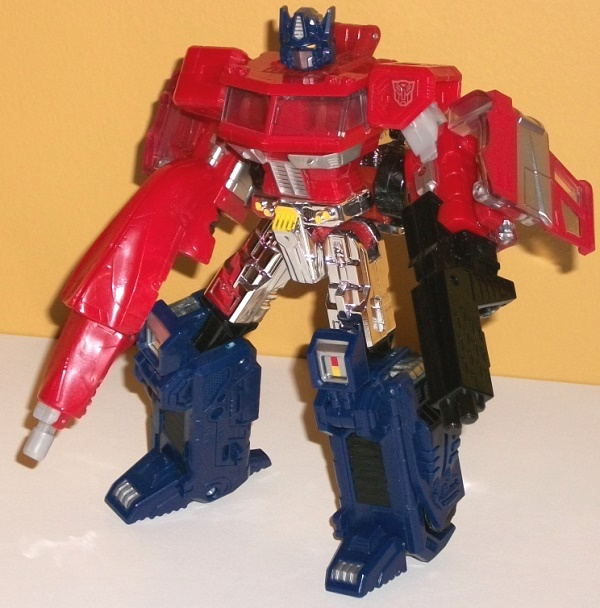

 
Size : Voyager
Difficulty of Transformation : Hard
Color Scheme : Dark blue, black, light milky gray, red, and some dark flat navy blue, pale yellow, light sky blue, clear plastic, and silver
Individual Rating : 9.6
Allegiances
: Autobot
Price
: $40 (U.S.)
Overall Rating
: 9.7
(NOTE: Because this set is composed of repaints,
this is not a full-blown review. This mainly covers any changes made to
the set and the color scheme, and merely compares it to the original versions
of these molds. For a review on the original AoE voyager "Evasion" Optimus
Prime, go
here
. For a review on Classics
Optimus Prime-- the mold used for "Then" Optimus-- go
here
.)
 Optimus
Prime ("Now")
Optimus
Prime ("Now")


Size
: Voyager
Difficulty of Transformation
: Hard
Color Scheme
: Dark blue, black,
light milky gray, red, and some dark flat navy blue, pale yellow, light
sky blue, clear plastic, and silver
Individual Rating
: 9.6
For this version, "Evasion
Mode" Optimus Prime goes for a bit more of a movie look with dark blue
flames splashed across the front and sides of his red cab-- unfortunately,
he doesn't have the rusted & faded look he has in the movie, and largely
sticks with the mass-retail version's "G1-inspired" deco otherwise, with
a red cab, a dark blue back section, and some gray plastic. The gray plastic
on this version is noticeably lighter than on the original's, and I'm not
a huge fan of this change-- along with the robot feet being unpainted gray,
meaning that they stick out more in vehicle mode than on the original,
though the flipside of that is that they DO offer a bit more color variety
in vehicle mode. Some other details have been removed, like the paint on
the side windows. On the plus side, some paint has also been added-- beyond
the aforementioned flame paint apps, there's also two bits of silver paint
on the roof above the windows (the silver on this version is more of a
traditional silver compared to the gunmetal gray of the original), and
some added yellow paint apps on both the front bumper and the robot crotch
(though not the headlights, weirdly enough). The shotgun is also now a
more-fitting black coloration, and a few more pieces have been made dark
blue-- namely, the paint around the faux robot mode chest-windows, and
the pieces connecting his front tires to his main body. He's got a white
Autobot symbol in a rather G1-esque place on his vehicle mode-- that is,
on the upper left back corner of the cab (even though that logo doesn't
carry over to the same spot in robot mode).
No mold changes have
been made to this version of Optimus Prime.
 Optimus
Prime ("Then")
Optimus
Prime ("Then")


Size
: Voyager
Difficulty of Transformation
:
Medium
Color Scheme
: Red, dark flat blue,
chrome silver, and some clear plastic, dull red, silver, light milky gray,
and yellow
Individual Rating
: 9.7
Optimus Prime is technically
a redeco of Classics Prime, in that much of him is
technically
different
from the original. However, they're all minor changes that-- with the exception
of the chrome silver on the front grill, bumper, and upper robot mode legs--
isn't something that you'd immediately notice unless you put him side-to-side
with the original Classics Optimus. He still has a very much "traditional
Optimus" color palette-- in fact, overall this one sticks even closer to
the
G1 color scheme
compared to the Classics
version. As such, most of this part of the review will be more of a bulletpoint
list of changes made. Beyond the aforementioned chrome, the changes made
to this release of the mold compared to the original are:
- The dark blue plastic is bit darker and
flatter of a shade.
- The silver paint on the red part of the
cab is in a more G1-esque "single stripe" pattern along the sides of the
vehicle mode compared to the more complex, angular stripes on the original.
- Silver has also been added to the robot
forearms in place of yellow.
- Silver paint is also on the toes of this
version, whereas there was no paint there on the original.
- The smokestacks and top of the cab/shield
weapon are completely unpainted for this version.
- The plastic is a normal clear color,
as opposed to the translucent blue on the original Classics version.
- There are red, silver, and yellow details
on the kneecaps on this version that are more in line with the G1 sticker-type
details, compared with plain yellow kneecaps on the original.
- The head on this one has yellow eyes
and a silver forehead crest, whereas the original had transparent blue
eyes and a yellow forehead crest.
- The yellow on the robot crotch doesn't
go down as far.
- The dull red plastic used for some of
the minor "unpaintable" pieces on Optimus' upper back is a shade or two
darker on this version than on the original.
- The flaps on the side of the cab that
fold down onto the robot legs during transformation have one side painted
red in vehicle mode, compared to the original being unpainted dark blue
plastic. (The dark blue plastic "bleeds" through the red paint here and
makes it look a bit darker than it actually is.)
No mold changes have
been made to this version of Optimus Prime; surprisingly, even after so
many uses, his joints are still as tight as ever.
The "Evolution" Optimus
Prime pack is a hard pack to pass up, particularly if you don't have one
(and especially if you don't have either) of these molds. Neither version
has been changed a ton from its initial version, so if you have both of
the original releases this is probably a pass, but otherwise both are some
of the best toys Optimus Prime has ever gotten, and they represent quite
well both his "classic" and "Movie" looks. They're also at a bit cheaper
of a price than buying both separately. I kinda wish the movie version
looked a bit more like the actual truck in the movie in terms of colors,
but I guess that was for the version coming later, at the tail end of the
line....
Reviews by Beastbot